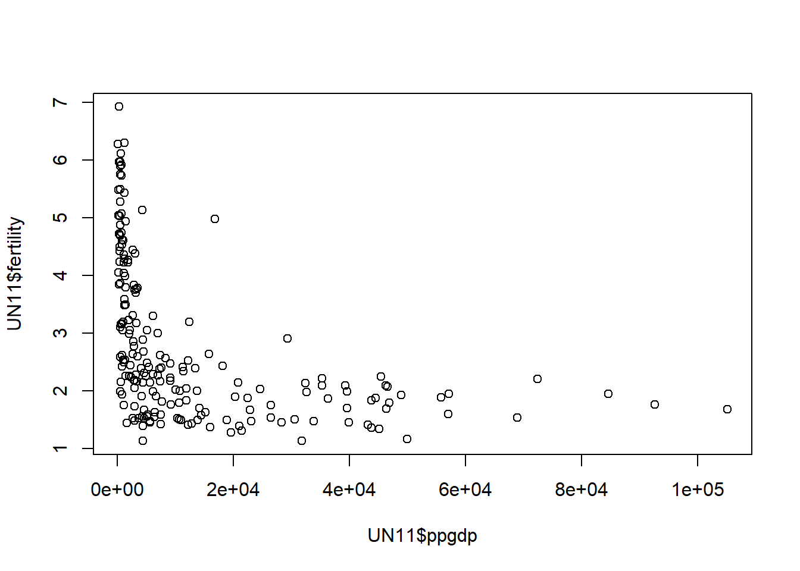
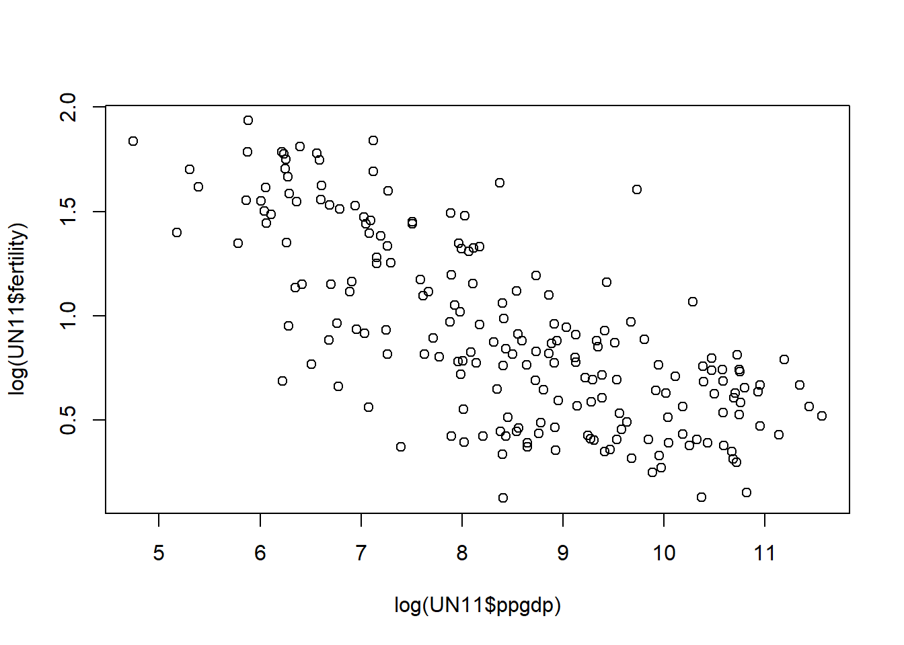
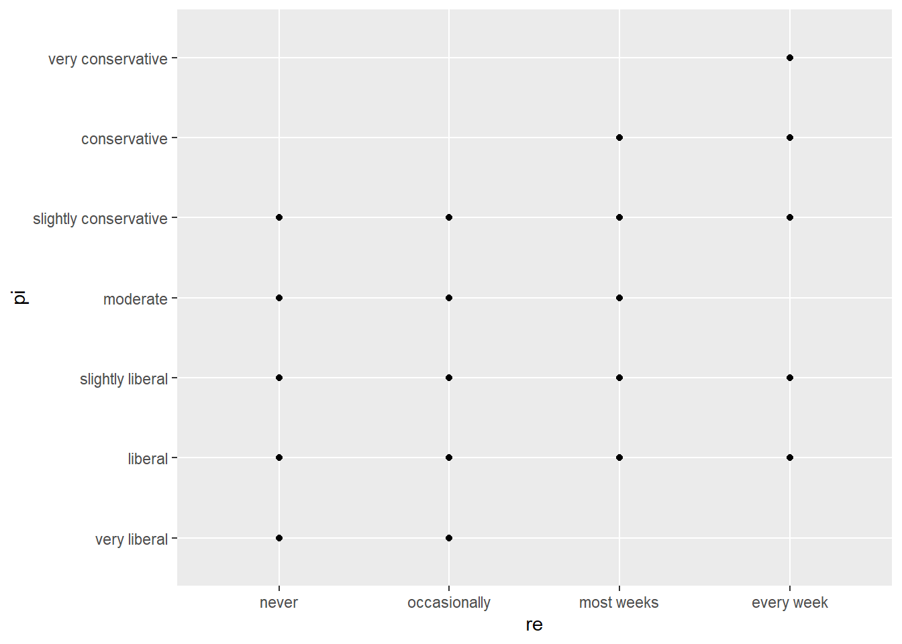

Code
library(tidyverse)
knitr::opts_chunk$set(echo = TRUE)library(tidyverse)
knitr::opts_chunk$set(echo = TRUE)Loading in data
library(alr4) Loading required package: carLoading required package: carData
Attaching package: 'car'The following object is masked from 'package:dplyr':
recodeThe following object is masked from 'package:purrr':
someLoading required package: effectslattice theme set by effectsTheme()
See ?effectsTheme for details.library(smss) data('UN11', package = 'alr4')head(UN11) region group fertility ppgdp lifeExpF pctUrban
Afghanistan Asia other 5.968 499.0 49.49 23
Albania Europe other 1.525 3677.2 80.40 53
Algeria Africa africa 2.142 4473.0 75.00 67
Angola Africa africa 5.135 4321.9 53.17 59
Anguilla Caribbean other 2.000 13750.1 81.10 100
Argentina Latin Amer other 2.172 9162.1 79.89 93The predictor variable is ppgdp (Per Person Gross National Product) and the response variable is fertility (Birth Rate Per 1000 Females).
Plotting the scatterplot of fertility versus ppgdp shows a large initial reduction in fertility as GDP increase which quickly levels out with little subsequent change in fertility as GDP continues to increase.A straight-line mean function seems like an implausible fit.
plot(x = UN11$ppgdp, y = UN11$fertility)
A simple liner regression model seems more plausible when using natural log, the plot now seems like a good fit for a negative linear regression line.
plot(x = log(UN11$ppgdp), y = log(UN11$fertility))
Changing the unit of the explanatory variable from currency in dollars to pound, which is worth more than the equivalent amount in dollars in 2016, leads to a smaller coefficient for annual income and therefore decrease the slope in a linear regression.
Correlation, as a standardized version of the slope, does not rely on unit of measurement however and will not be affected by an change in currency denomination.
Loading in water data.
data('water', package = 'alr4')Looking at the scatter plot matrix shows relationships between variables for year, precipitation at six Sierra Nevada mountain sites - APMAM, APSAB, APSLAKE, OPBPC, OPRC, and OPSLAKE, and stream runoff volume near Bishop CA - BSAAM.
First column shows precipitation then runoff (y-axis) by year(x-axis). We can see that for most sites precipitation has a somewhat wide distribution confined towards the lower end of the range with some outliners. OPRC precipitation is has greater spread while OPSLAKE and BSAAM show somewhat of a convex relationship.
Looking at the last row comparing runoff (y-axis) to precipitation (x-axis); there is minimal correlation between precipitation from APMAM, APSAB, and APSLAKE and runoff levels but a strong positive linear correlation with precipitation from OPBPC, OPRC, and OPSLAKE sites. OPBPC, OPRC, and OPSLAKE sites’ greater correlation with BSAAM implies that these sites may be closer or more influential to stream runoff volume near Bishop CA.
When focusing on the relationships between precipitation across sites there seems to be two groupings with high correlations; APMAM, APSAB, and APSLAKE all show fairly strong positive linear relationships with each other as do OPBPC, OPRC, and OPSLAKE. Across these groups of variables however the relationship is less clear and values are generally clustered among the lower values.This implies that sites based on these two groupings may share closer geographic proximity and are therefore more similarly affected by precipitation levels.
pairs(water)
Loading in Rateprof data.
data('Rateprof', package = 'alr4')Specifying rating variables - quality, helpfulness, clarity, easiness, raterInterest.
Rateprof1 = subset(Rateprof, select = c(quality, helpfulness, clarity, easiness, raterInterest))
head(Rateprof1) quality helpfulness clarity easiness raterInterest
1 4.636364 4.636364 4.636364 4.818182 3.545455
2 4.318182 4.545455 4.090909 4.363636 4.000000
3 4.790698 4.720930 4.860465 4.604651 3.432432
4 4.250000 4.458333 4.041667 2.791667 3.181818
5 4.684211 4.684211 4.684211 4.473684 4.214286
6 4.233333 4.266667 4.200000 4.533333 3.916667The scatter plot matrix shows very strong positive linear relationships between quality, helpfulness, and clarity. Easiness is also positively correlated with these three variables but less strongly. raterInterest is even less strongly correlated with quality, helpfulness, clarity, and easiness (especially with easiness) but there still seems to be a slightly positive linear relationship.
pairs(Rateprof1)
Loading in student.survey data.
data('student.survey', package = 'smss')Reviewing variables; pi is political ideology, re is religiosity, hi is high school GPA, and tv is average hours of TV watching per week.
?student.survey
view(student.survey)Regression analysis of y = political ideology and x = religiosity.
lm(pi ~ re, data = student.survey)Warning in model.response(mf, "numeric"): using type = "numeric" with a factor
response will be ignoredWarning in Ops.ordered(y, z$residuals): '-' is not meaningful for ordered
factors
Call:
lm(formula = pi ~ re, data = student.survey)
Coefficients:
(Intercept) re.L re.Q re.C
3.5253 2.1864 0.1049 -0.6958 Regression analysis of y = high school GPA and x = hours of TV watching.
lm(hi ~ tv, data = student.survey)
Call:
lm(formula = hi ~ tv, data = student.survey)
Coefficients:
(Intercept) tv
3.44135 -0.01831 Plot of y = political ideology and x = religiosity.
ggplot(data = student.survey, aes(x = re, y = pi)) +
geom_point() +
geom_smooth(method = 'lm')`geom_smooth()` using formula = 'y ~ x'
Plot of y = high school GPA and x = hours of TV watching.
ggplot(data = student.survey, aes(x = tv, y = hi)) +
geom_point() +
geom_smooth(method = 'lm')`geom_smooth()` using formula = 'y ~ x'
Analysis of the relationship between political ideology and religiosity shows a weak positive linear relationship between the two variables. As religious service attendance increases political conservatism also increases while greater political liberalism is associated with lower attendance.
The relationship between high school GPA and hours of TV watching shows a slightly negative linear relationship. Increased hours watching TV is correlated with a small decrease in high school GPA.